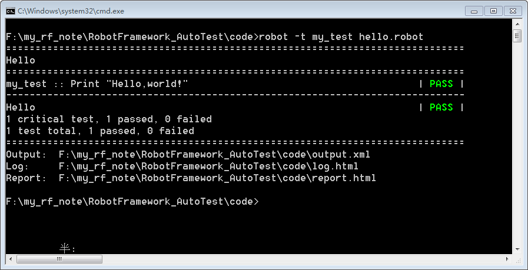
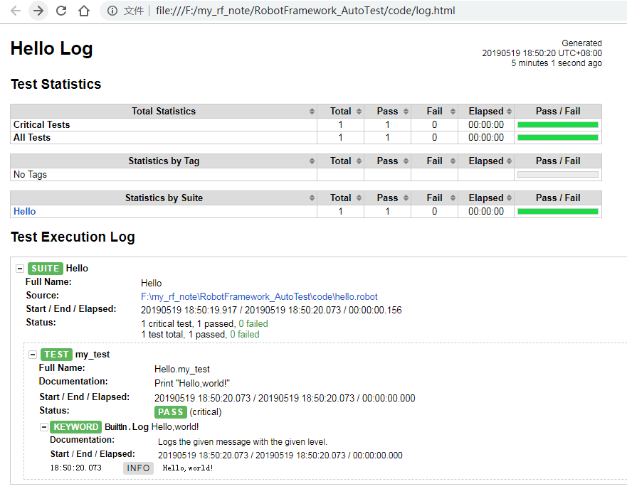

robot -t my_test_variable hello.robot
得到：

我们首先实打印 "Hello,world!"的功能
在你的工程目录新建一个"hello.robot"文件，输入如下内容：
*** Settings *** *** Variables *** *** Test Cases *** my_test Log Hello,world! *** Keywords ***
在命令行进入你的工程目录下，输入：
robot -t my_test hello.robot
参数 -t 的后面跟要执行的测试用例，这里如果不加 -t my_test，将执行Test Cases下的所有用例。因为 hello.robot 只有一个用例 my_test，因此，这里的-t my_test 可省略。
执行结果如下：
这里我们看不出是否打印了"Hello,world!"，打开同目录下生成的 log.html 文件
可以看到，打印了"Hello,world!"。命令行形式不太方便，下一章我们开始使用图形化界面，本章只是简单的开始写几个Robot Framework 脚本入门。
在文件"hello.robot"中，Settings, Variables, Test Cases, 和 Keywords 称为表格，它们的作用如下：
| 表格 | 用处 |
|---|---|
| Settings | 1)导入测试库、资源文件、变量文件
2)为创建测试套件和test cases
定义元数据
|
| Variables | 定义变量 |
| Test Cases | 创建测试用例 |
| Keywords | 创建用户关键字 |
在robot Framework 中通过“Set variable”关键字来定义变量，或者在 variables 表格下定义：
*** Settings *** *** Variables *** ${MESSAGE} Hello, world! *** Test Cases *** my_test Log Hello,world! my_test_variable Log ${MESSAGE} ${MESSAGE} Set Variable I am learning Robot Framwork! Log ${MESSAGE} *** Keywords ***
在命令行输入：
robot -t my_test_variable hello.robot
得到：